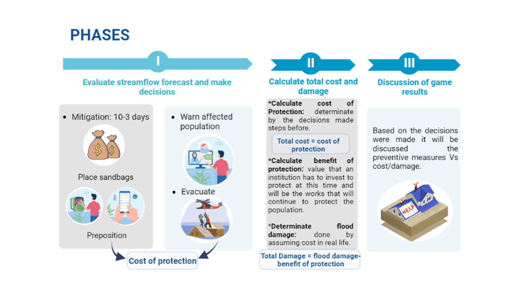

Rules GEOGloWS Forecast Game
The flood forecast response game is based on output from the GEOGloWS ECMWF Streamflow Services (GESS) global hydrological model, a global streamflow forecasting service.
The flood forecast response game will use the following flow forecast graph as a basis:

The flood forecast response game assumptions are:
- -Any flooded crop is considered 50% lost.
-Assume no loss of life.
-Realistic flood response actions are included in the game, but not all possibilities are accounted for.
-Cost and benefit values are estimates based on real data, but have been optimized for smooth gameplay.
-Cost and benefit values will also vary depending on local conditions.
Purposes of the game:
- -Explore the emergency response decision-making process in the context of floods.
-Expose you to NASA SERVIR GEOGloWS forecasting services that will help you make decisions in real-life scenarios.
The forecast game will be played in three phases as shown in the graphic below:
Before starting, you will observe different flow forecast graphs and will be able to make the decisions agreed upon in the group. You can make decisions every day, but you may only make one decision per day and per type of action. You may also decide to wait and see by choosing not to act on a given day. Click "Next Day" to continue after you decide to take an action or not and have fun.
Click a button below to start the game.